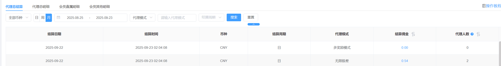
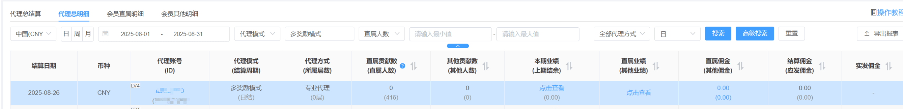
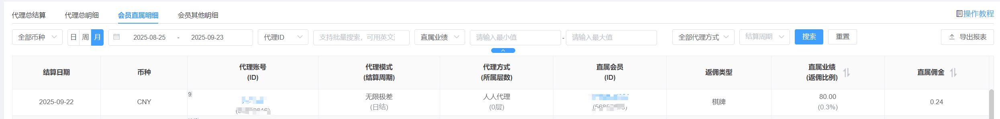
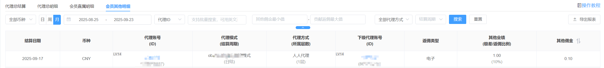

1、代理总结算
该页面为当前已启用的代理模式的结算的总佣金。 举例说明(如下图所示)：该站点启用了两种代理模式，则显示两种代理模式结算的总佣金。
代理人数：即当前代理模式下产生佣金的总人数；点击结算佣金，则跳转到代理总明细，展示具体的详细人数。

2、代理总明细
当前模块为每个代理产生佣金的详细数据。
代理账号：点击可查看当前账号的会员数据；
直属人数：即当前代理总共有多少直属人数；
直属贡献数：即在该结算周期中，多少个直属会员贡献了佣金，点击可跳转直属会员明细中。
其他人数：直属人数:当前代理的所有直属人数；
其他贡献数：即在结算周期中，多少个其他下级贡献的人数，点击可跳转到会员其他明细中。
本期业绩：在无限极差中，本期业绩=直属业绩+其他业绩，其他的代理模式中，本期业绩=直属业绩。
直属业绩：即本结算周期，直属会员产生了多少的业绩。点击可查看详情，详情会根据佣金计算依据来进行展示不同的内容。
- 有效投注：显示每个游戏类型的直属业绩
- 净盈利：按照配置的净盈利公式，会展示当前所有直属会员的会员输赢、领取奖励、三方游戏统一成本、充值手续费、提现手续费、上期结余的总计
- 多奖励裂变：根据多奖励的配置，会展示对应的首充人数、总充值金额、总有效投注和总净盈利。
其他业绩：即展示其他下级的业绩。目前展示的数据为：无限极差 和多奖励模式。
- 无限极差：展示每个游戏类型的其他下级的总计；
- 多奖励模式：展示二级和三级的充值金额、有效投注、净盈利的业绩。
上期结余：只有净盈利模式中才会展示，其他的模式则显示为-。点击可查看详情。
直属佣金：点击可查看直属佣金的总明细。点击可查看详情，详情会根据佣金计算依据来进行展示不同的内容
- 有效投注：点击可查看每个游戏类型的业绩以及对应返佣比例；
- 净盈利：显示直属会员的会员输赢、领取奖励、三方游戏统一成本、充值手续费、提现手续费、上期结余的总计 和 对应的返佣比例；
- 多奖励模式：会按照多奖励的配置显示终极大奖、首充佣金、充值金额、有效投注、净盈利的业绩以及返佣比例和佣金；
其他佣金：点击可查看其他下级的佣金的总明细
- 净盈利：显示二级和三级的佣金业绩， 返佣比例和奖励的比例（如果自定义超过三级，则显示三级以下的总佣金 用返佣比例和奖励返佣）
- 多奖励模式：展示二级三级充值总计、总有效投注、总净盈利的以及对应的返佣比例和返佣
结算佣金：即在结算周期中应结算的佣金。
实发佣金：即在审核之后，实际发放给代理的佣金，点击之后跳转到佣金管理中。

3、会员直属明细
该模块展示的为代理的直属会员贡献的佣金明细
返佣类型：即直属会员给上级贡献的返佣类型，会根据不同的代理模式展示不同的数据。
- 有效投注类：展示每个游戏平台直属会员给上级贡献的业绩、佣金和返佣比例
- 净盈利类：直属会员给上级贡献的净盈利以及对应的返佣比例和佣金
- 多奖励：会根据业主在多奖励模式配置的返佣类型，显示对应的首充、净盈利、有效投注、充值对应的返佣。

4、会员其他明细
该模块展示的代理的其他会员贡献的佣金明细
返佣比例：详见会员直属明细中的返佣比例
极差/返佣比例：因无限极差模式中没有返佣比例，只有极差，故而该字段中会显示极差；其他的模式对应的返佣比例
